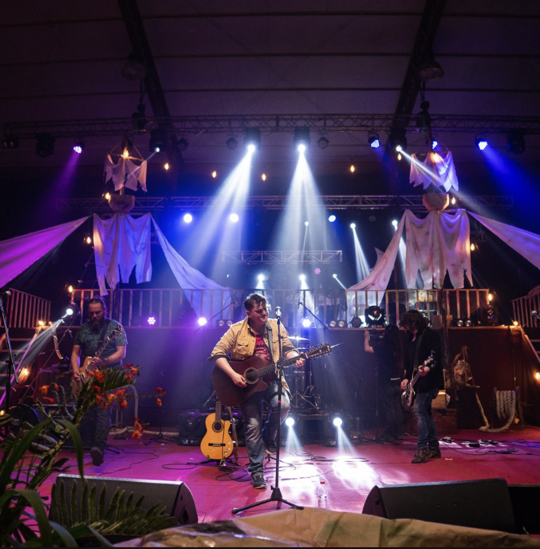
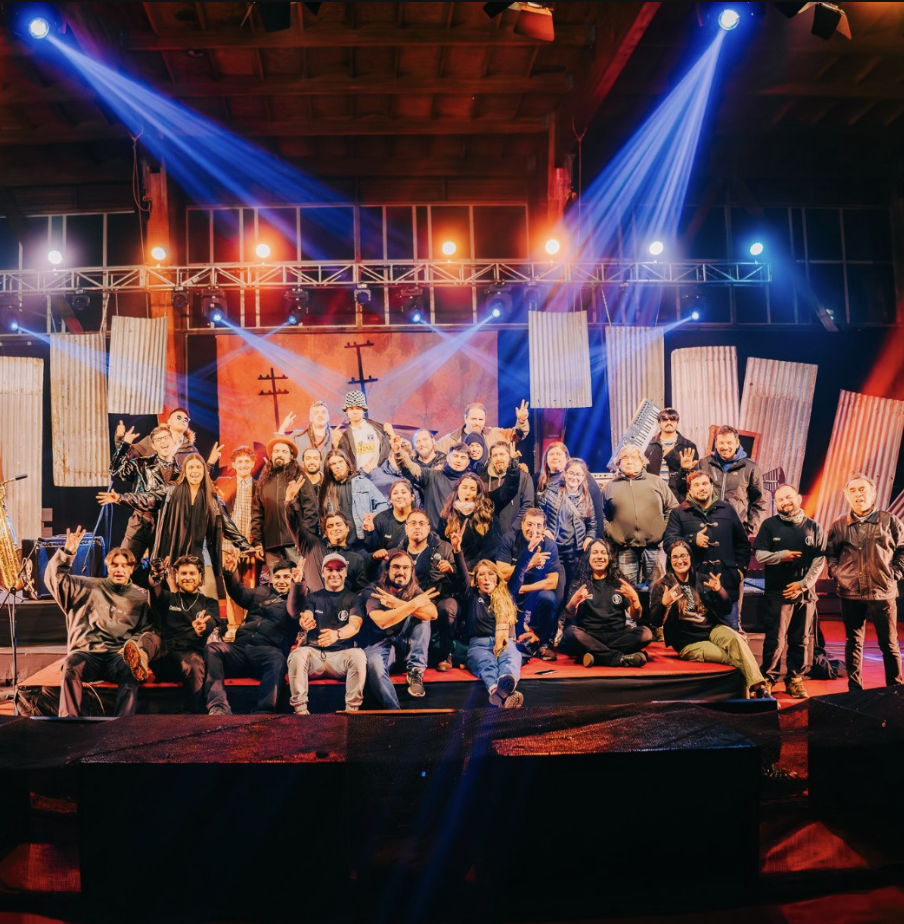

Portafolio
Conoce mis proyectos.
Proyectos de comunicación estratégica y gestión cultural desarrollados en Ancud, Chiloé, abarcando desde la difusión institucional hasta la producción de eventos multiculturales.

Festival de Gaviotas
Producción de Eventos
Formación Comunitaria
Vinculación Comunitaria
Fundación Cultural Tierra de Gaviotas
Fundación sin fines de lucro, voluntaria y autogestionada de Ancud, Chiloé, que difunde e impulsa instancias de despliegue cultural y patrimonial. Lideré el diseño e implementación de estrategias comunicacionales online y offline, logrando incrementar la visibilidad digital a 7.437 seguidores y coordinar la difusión con 40 canales de televisión regionales.

Gaviotas on the Rock
Evento anual creado por la Fundación Cultural Tierra de Gaviotas desde 2021 que celebra el Día Nacional del Rock, fusionando música y patrimonio local. Formato presencial con transmisión en vivo. Lideré la estrategia comunicacional, coordinando difusión con canales de TV regional y gestionando auspiciadores. Convoca 100 a 200 asistentes con 3.000 a 8.000 visualizaciones en vivo.

Parque Mawünko
Proyecto "Acercando a la comunidad ancuditana a la unión de las aguas del Parque Mawünko", financiado por el Gobierno Regional de Los Lagos. Diseñé y ejecuté el plan de difusión con una estrategia orientada a la participación comunitaria, logrando la capacidad máxima de 200 asistentes y un alcance digital de 6.000+ cuentas.
Artesanales de Chiloé
Creación y desarrollo del proyecto Artesanales de Chiloé, abarcando desde la construcción de marca hasta la implementación de estrategias de comunicación y contenido. Incluyó gestión de clientes y proveedores, coordinación de ventas y logística, logrando 15+ clientes frecuentes y presencia digital para difusión de productos artesanales locales.